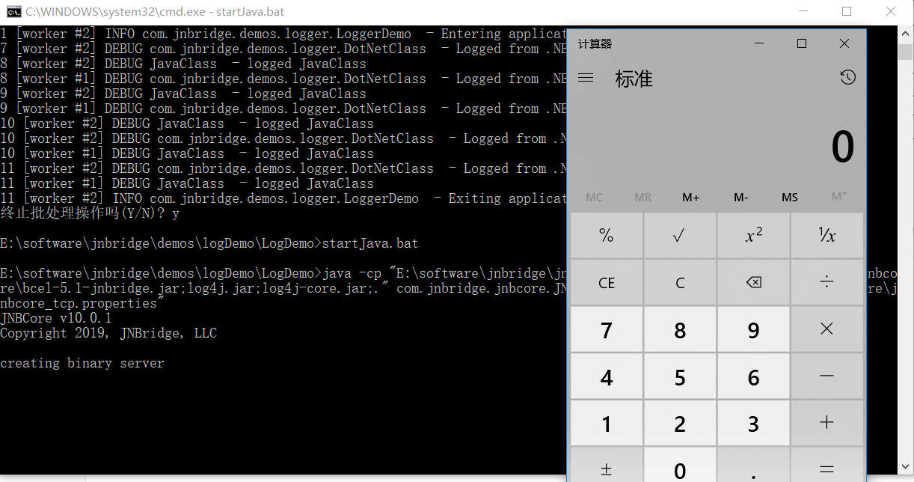

漏洞简介
Adobe ColdFusion 是一个商用的快速开发平台。它可以作为一个开发平台使用，也可以提供Flash远程服务或者作为 Adobe Flex应用的后台服务器 。
2019年06月11日，Adobe 发布安全公告，修复了Adobe ColdFusion多个严重漏洞。其中有一个由Moritz Bechler提交的命令注入漏洞(CVE-2019-7839)。
2019年06月26日，Moritz Bechler 在 Bugtraq 上公布了远程代码执行漏洞(CVE-2019-7839)的部分细节，由于 JNBridge 组件存在缺陷，而 ColdFusion 默认开启JNBridge组件，导致代码执行漏洞。
漏洞影响
- ColdFusion 2018 Update 3 及之前的版本
- ColdFusion 2018 Update 10 及之前的版本
- ColdFusion 11 Update 18 及之前的版本
- <= ColdFusion 9
漏洞分析
根据 Moritz Bechler 披露的部分细节，是由于ColdFusion 默认开启了 JNBridge listener 从而导致了漏洞。
先来了解一下JNBridge。
什么是 JNBridge？
JNBridge 是一种领先的JAVA与.NET互操作的的产品，凭借JNBridge技术，Java 和.NET代码无需交叉编译器就可以实现对象共享。所有Java代码运行在JVM上，而.NET代码则运行在CLR上。在该方案下，JVM和CLR可以运 行在不同的机器上，也可以运行在一台机器的不同进程上，甚至还能运行在相同的进程的不同应用程序域上。
下载 JNBridgePro，安装完之后会有demo。试用license
1 | jnbp-eval-v10.0#1899-2367-9451-2280 |
这里我们尝试使用.net去调用java，跑一下logDemo，了解下大致流程。
启动 Java 服务端
根据 JNBridge 的安装路径，修改startJava.bat，运行
可以看到，JNBridge 服务端 listener 已开启，监听在8085端口。
构建 .Net 客户端
根据 demo的指示文档 logDemo.pdf，一步一步构建 .Net 项目。
运行
运行 .Net 项目，调用 Java 服务端，成功调用。
如何执行调用 java.lang.Runtime
之前流程有一步是将 loggerDemo.javaClass转成 logger.dll，试想一下，是否可以将java.lang.Runtime导成dll文件，供 .Net 客户端引用，然后去调用 Java 服务端的java.lang.Runtime？
尝试一下
将 rt.jar引入 classpath
添加 java.lang.Runtime类
导出 runtime.dll
引入 .Net 项目中供调用
运行
成功调用到了 Java 服务端中的java.lang.Runtime，这也是这个漏洞的根源。
ColdFusion 中的 JNBridge
ColdFusion 中是默认运行了 JNBridge listener 的，并且是 Java 服务端，监听端口是 6095(ColdFusion 2018)、6093(ColdFusion 2016)、6085(ColdFusion <=9/11)。
由于 Coldfusion 中带的 JNBridge 版本不同，所以构造 payload 的方式有些差异。
ColdFusion 2016/2018
ColdFusion 2018 中的 JNBridge 版本是 v7.3.1，无法使用上面的的JNBridge v10去构造 payload，在 JNBridge 官网上可以下载一部分历史版本，下载 v7.3版本。
编写想要在 Java 服务端执行的代码
1 | String command = "whoami"; |
里面使用到了java.lang.Runtime，java.lang.Process，java.io.BufferedReader，java.io.InputStreamReader和java.lang.System，将相关类从rt.jar中导成runtime2.dll，供 .Net 客户端引用。
根据 Java代码重写
这里面有个非常重要的 JNBShare.dll，这里使用自己安装的 JNBridge 成功后生成的 JNBShare.dll，无法使用ColdFusion 中 JNBridge 的 JNBShare.dll，会报错。
运行，攻击远程的ColdFusion 2018(Linux平台)，成功返回结果。
ColdFusion 9/11
ColdFusion 9 内部的 JNBridge 版本是 v5.1，监听端口是 6085。由于这个版本比较老了，没找到安装包，现在需要生成供我们引用的runtime2.dll和能用的JNBShare.dll。ColdFusion 内部的 JNBridge中的jnbproxyGui.exe无法构建 .net -> java项目，也就是说GUI工具用不了，所幸的是命令行工具还可以用。
jnbproxy.exe，看下参数。
根据参数，生成runtime2.dll
1 | jnbproxy /d C:\logDemo /cp C:\ColdFusion9\jnbridge\jre\lib\rt.jar /host localhost /n runtime2 /nj /pd n2j /port 6085 /pro b /pp C:\ColdFusion9\lib java.lang.Runtime java.lang.Process java.io.BufferedReader java.io.InputStreamReader java.lang.System |
至于 JNBShare.dll，因为内部的无法使用，安装包又下载不到。幸运的是有人收藏了这个JNBShare.dll，谷歌搜索能够找到，并且刚好是v5.1版本的。
运行，攻击远程的 ColdFusion 9(windows平台)，返回命令执行结果。